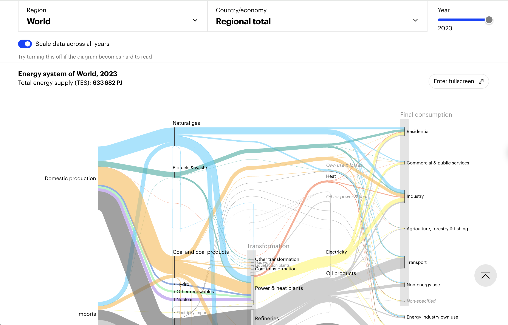

Complete energy balance · 2023
Where energy comes from—and where it goes
Interactive Sankey diagram. Link width represents energy in terajoules. Choose a carrier to highlight its path.
Visualization Critique and Redesign
A critique of the original energy-balance view and a D3 redesign for readable comparison over time.

Original visualization: IEA Energy Sankey, World regional total, 2023 (screenshot captured from the interactive). See Understanding and using the Energy Balance and the IEA Energy Sankey.
Original visualization and context
The IEA Energy Sankey is an interactive visualization created by the International Energy Agency (IEA) using data from the IEA World Energy Balances. It shows how energy moves through a country or region’s energy system over time.
The diagram is organized from left to right. It begins with energy supply, including domestic production and imports. Energy then passes through transformation processes such as power and heat plants, refineries, coal transformation, gas works, and liquefaction plants. After transformation, secondary energy products such as electricity, heat, and oil products continue through the system. On the right, energy either reaches final-consumption sectors such as industry, transport, residential, commercial and public services, and agriculture, or exits the national supply through exports, international bunkers, and losses.
The tool covers more than 150 countries and regions. In general, annual data are available from 1971 to 2024, with data extending back to 1960 for OECD countries.
The visualization shows where energy comes from, how it is transformed, where losses or exits occur, and which sectors ultimately consume it.
The intended audience includes energy analysts, policymakers, researchers, students, and informed members of the public who want to understand the structure of a country or region’s energy system.
500–800 word report
Critique. The original has two important strengths. First, the Sankey abstraction matches the domain: flow width makes large energy pathways immediately visible and preserves the balance structure better than a disconnected set of bars. Second, the chart covers the whole system in one view. Users can see supply, conversion, losses and end use without switching between separate charts. The original also supports country and year exploration, so it can serve both overview and lookup tasks.
Three weaknesses make those strengths harder to use. Thin links and a broad color palette fade into the background, especially where many carriers cross near transformation nodes. The viewer must repeatedly trace a line across a wide canvas to answer a simple question such as “where does gas end up?” The second weakness is categorical overload. Technical balance items, exports and final sectors compete for the same visual attention, while the detail needed to interpret a selected flow is separated from the main diagram. The third weakness is temporal comparison. Year changes are available, but the original interaction does not make a before-and-after pattern persistent, so users must remember one state while inspecting another. These issues increase search time and make small or negative changes easy to miss.
These weaknesses are especially important for comparison tasks rather than simple browsing. A reader can understand the overall structure, but answering a focused question requires visual search across several stages and repeated mental bookkeeping. The design therefore communicates system completeness more effectively than it communicates change, exceptions, or one selected pathway.
Redesign rationale. The redesign makes three major changes. First, it assigns each carrier a high-contrast, consistent color and adds “Major flows” and “All flows” modes. The overview suppresses visual noise, while the complete network remains one click away. Second, clicking a node, link or legend item highlights the carrier path and keeps a same-page detail panel visible. Source and destination bars give a direct summary without asking users to follow every ribbon. Third, a 2019–2023 slider, play control and previous-year comparison turn time into an explicit task. “Same scale across years” preserves comparability when the selected geography changes. Europe represents the official EU-27 aggregate, while eight country options support regional comparison.
Original versus redesign. The redesign improves targeted questions, temporal pattern recognition and same-page explanation. A user can start with a complete system view, focus natural gas, play through the 2020 disruption and inspect destination changes without leaving the page. It also keeps the original Sankey grammar, so the redesign remains recognizable. The trade-off is scope and detail. The public prototype uses Eurostat rather than IEA values, groups some technical items under “Other energy flows,” and limits the comparison window to 2019–2023. A persistent detail panel and stronger colors improve focus but reduce the neutral, all-at-once feel of the original. Thin flows still require “All flows” or a focused selection. These limits are deliberate: the redesign prioritizes traceability and comparison over reproducing every original category.
References: International Energy Agency, Energy Sankey; IEA, Understanding and using the Energy Balance; Eurostat, Complete energy balances, nrg_bal_c.
D3.js redesign
Choose a geography, play the five-year sequence, or click a carrier to keep its full path and details in view.
Complete energy balance · 2023
Interactive Sankey diagram. Link width represents energy in terajoules. Choose a carrier to highlight its path.
Width means quantity. Every ribbon is proportional to terajoules; hover for its exact value.
Color means carrier. Selection preserves the carrier color while unrelated paths recede.
Adjustments stay visible. Statistical and balancing differences are disclosed rather than hidden.